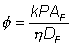
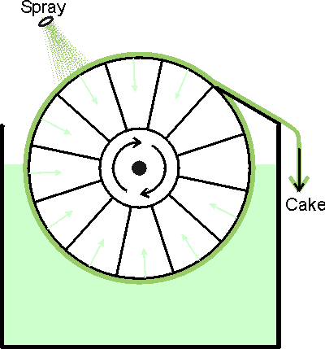
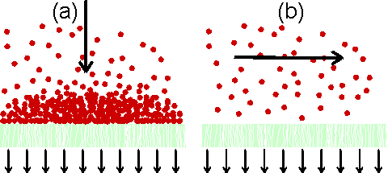

Enzyme Technology
Filtration
Filtration separates simply on the basis of
particle size. Its efficiency is limited by the shape and compressibility of the
particles, the viscosity of the liquid phase and the maximum allowable
pressures. Large-scale simple filtration employs filter cloths and filter aids
in a plate and frame press configuration, in rotary vacuum filters or
centrifugal filters (Figure 2.3). The volumetric throughput of a filter is
proportional to the pressure (P) and filter area (AF) and inversely
proportional to the filter cake thickness (DF) and the dynamic
viscosity

(2.3)
where k is a proportionality constant dependent
on the size and nature of the particles. For very small particles k depends on
the fourth power of their diameter. Filtration of particles that are easily
compressed leads to filter blockage and the failure of Equation 2.3 to describe
the system. Under these circumstances a filter aid, such as celite, is mixed
with the feedstock to improve the mechanical stability of the filter cake.
Filter aids are generally used only where the liquid phase is required as they
cause substantial problems in the recovery of solids. They also may cause loss
of enzyme activity from the solution due to physical hold-up in the filter cake.
It is often difficult for a process development manager to decide whether to
attempt to recover enzyme trapped in this way. Problems associated with the
build-up of the filter cake may also be avoided by high tangential flow of the
feedstock across the surface of the filter, a process known as crossflow
microfiltration (Figure 2.4). This method dispenses with filter aids and
uses special symmetric microporous membrane assemblies capable of retaining
particles down to 0.1 - 1 mm diameter (compare Bacillus
diameter of about 2 mm).

Figure 2.3. The basic design of the rotary
vacuum filter. The suspension is sucked through a filter cloth on a rotating
drum. This produces a filter cake which is removed with a blade. The filter cake
may be rinsed during its rotation. These filters are generally rather messy and
difficult to contain making them generally unsuitable for use in the production
of toxic or recombinant DNA products. There have been recent developments that
improve their suitability, however, such as the Disposable
Rotary Drum Filter.
A simple and familiar filtration apparatus is the perforate bowl
centrifuge or basket centrifuge, in effect a spin drier. Cell debris is
collected on a cloth with, or without, filter aid and can be skimmed off when
necessary using a suitable blade. Such centrifugal filters have a large radius
and effective liquid depth, allowing high volumes. However, safety decrees that
the angular velocity must be low and so only large particles (e.g., plant
material) can be removed satisfactorily.

Figure 2.4. Principles of
(a) dead-end filtration and (b) cross-flow filtration. In dead-end filtration
the flow causes the build-up of the filter cake, which may prevent efficient
operation. This is avoided in cross-flow filtration where the flow sweeps the
membrane surface clean.
Home
| Back | Next
This page was established in 2004 and last updated by Martin
Chaplin
on
6 August, 2014
|